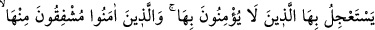

devam et.”
İmam Zahid şöyle demiştir: “__WORD__ tahkîk içindir. Yani kıyâmetin kopacağı vakit elbette
yakındır.”
Bu kavl-i ilahî ile insanlar boş, mânâsız ve uzun kuruntulardan alıkonulmakta; eceli
bekleme ve onun ansızın hucumuna karşı uyarılmaktadır. Allah Teâlâ bizi ve sizi,
hepimizi uyandırsın. Âmîn!..
18. Ona inanmayanlar, onun çabuk kopmasını isterler. İnananlar ise ondan
korkarlar ve onun gerçek olduğunu bilirler. İyi bilin ki, kıyâmet günü hakkında
tartışanlar derin bir sapıklık içindedirler.
“Ona inanmayanlar,” inkâr ve alay maksadıyla kıyâmetten korkmayanlar ve: “O ne
zaman gelecek? Keşke bir an önce kopuverse de hak belli olsa, biz mi haklıyız yoksa
Muhammed ve ashâbı mı?” diyenler “onun çabuk kopmasını isterler.”
“İsti’câl” bir şeyi zamanından önce isteyip araştırmaktır. Burada kelime, kâfirlerin
kıyâmetin gelmesi konusunda acele ettiklerini haber vermektedir.
İnkârcılar, kıyâmete inanmadıkları için onun ihtivâ ettiği azamet ve dehşetten
korkmazlar. Bunlar kıyâmetin vukuunu, kopuşunu uzak gördükleri için onun gelmesini
ister dururlar.
Kıyâmete “inananlar ise” sevap beklentisinde olarak “ondan korkarlar.” Zîrâ
müminler her zaman korku ve ümid arasında olup, hiçbir zaman kıyâmetin çabuk
gelmesini istemezler. Yani; Allah Teâlâ’nın onlara ne yapacağını, hesabın ve cezânın ne
şekilde olacağını bildiklerinden kıyâmetten korkarlar. “Ve onun gerçek olduğunu
bilirler.” Kıyâmet mutlak vukû bulacaktır. Bunda hiçbir şüphe yoktur. Bu kavl-i ilahîde
şuna işâret edilmektedir: Müminler ölüm sonrası imtihan endişesiyle ölümü temenni
etmezler. Ancak ölüme hazırlıklı olurlar. Ölüm gelince de bunu nahoş karşılamazlar.
Çünkü ölümü bir câhil olan bir de Hakk’a âşık olan temenni eder.
Âyette “ihtibâk” sanatı vardır. Buna göre zıddın (acele etmemenin) hazfine delil
olarak önce “isti’câl” zikredilmiştir. Yine evvelâ zıddının (korkmamanın) hazfine delil
olarak ikinci konumda “işfàk” zikredilmiştir.
“İyi bilin ki, kıyâmet günü hakkında tartışanlar,” o hususta mücâdele edenler ve
onun gelişini inadına inkâr edenler “derin bir sapıklık içindedirler.” Burada
kelimesi miryet kökünden olup aslında onların şek ve şüphe içinde olmalarını ifâde
eder. Dolayısıyla bu durum onları haksız tartışmalara sürükler. Burada “mümârât,”
lâzımı olan “tartışma” ile tefsir edilmiştir.